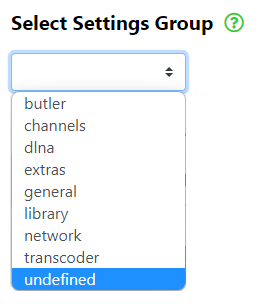

If you are unsure what these settings do, then please leave them alone, as you may easily misconfigure your Plex Media Server and render it inoperable.
For more information regarding these settings, please visit the Plex Advanced/Hidden server settings page or ask on the Plex Forums if you wish to know more about these hidden/advanced settings.
For a list of all the Groups and Server Settings, see the Server Settings List.
To access the module, click on Plex Media Server, then click on Server Settings below it.
Before doing anything else, select which server you wish to work with from the server selector drop down menu.


Next, select which filter settings you wish to use, Show only hidden settings, Show only advanced settings or Show all settings.
Note: You must select a server to use before you enter the Server Settings module. If you fail to do so, then the Select Settings Group may not be populated. Exit the Server Settings module, select a Server from the drop down menu at the top of the window and then re-enter the Server Settings module.
Then click on the Select Settings Group drop down menu and scroll through the list of settings groups.

Click on a settings group to select that group of settings.
A list of settings should be displayed. Click on the name of a setting to open that setting's edit dialogue where you may enter a new value for the setting.

The edit dialogue allows you to edit and save new settings.
Please exercise caution here. If you do not know what the setting will do, then leave it alone and consult the Plex Advanced/Hidden server settings page or ask on the Plex Forums, what this setting will do.

After entering a new value, click on Save.
You may also click on the Export selected group settings to CSV button to save the selected group settings to a .csv file or click on the Export all settings to CSV button to save all settings to a .csv file.

See the Help page for details on creating a custom level and exporting Art & Posters from a Movies library.
See the Help page for details on importing a .csv file into Microsoft Excel.
See the Help page for details on setting the Default Column Separator for Microsoft Excel in Windows 10.
- All Rights Reserved - WebTools-NG